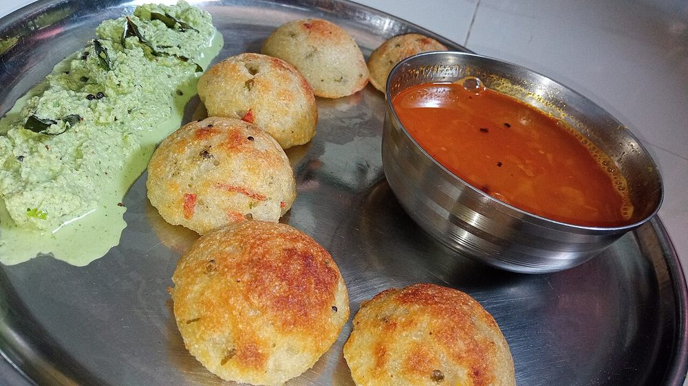

Contains: dairy
Ingredients
Quantities for 4.
- 1 cup Ragi Flour
- 10 soft, pitted and mashed Datesstands in for the mashed ripe banana of the traditional thambuttu, giving the same sweetness and binding
- 3 tbsp, grated Jaggery
- 1/2 cup fresh grated Coconut
- 2 tbsp Sesame
- 2 tbsp, melted Ghee
- 1/4 tsp, powdered Cardamomoptional
- 1 tbsp Honeydrizzled over at the tableoptional
- a pinch Salt
Cookware
stovetop
Before you start
- Roast the ragi flour first and let it cool to just-warm; hot flour melts the jaggery into syrup and the mixture will not hold together.
- Mash the dates thoroughly with the back of a spoon, or warm them for a minute in a little water first if they are dry.
- Grate the jaggery rather than chopping it so it disappears evenly into the flour.
Method
- Dry-roast the ragi flour in a heavy pan over low heat, stirring constantly, for 8 minutes until it darkens slightly and smells nutty.Low heat and constant stirring. Ragi catches at the base without warning and burnt ragi tastes acrid all the way through.
- Tip the flour onto a plate to stop it cooking and spread it out to cool for 5 minutes.
- In the same pan, toast the sesame seeds for 90 seconds until they pop and turn one shade darker.
- Put the warm ragi flour, mashed dates, grated jaggery, coconut, sesame and salt in a wide bowl.
- Rub everything together with your fingertips for 2 minutes until the jaggery is no longer visible as lumps.
- Pour over the melted ghee and the cardamom and work it in until the mixture darkens and starts holding its shape when squeezed.If it stays crumbly add ghee half a teaspoon at a time; too much at once makes it greasy and heavy.
- Take a fistful and squeeze it firmly in your closed hand, then press it into a rough round about 5 cm across.
- Repeat with the rest of the mixture; you should get 8 to 10 rounds.
- Serve at room temperature, with a drizzle of honey over each if you like.Thambuttu is meant to be dense and just short of dry. Served with a glass of buttermilk or hot tea, not on its own.
Storage
Keeps 4 days in an airtight box at room temperature and a week refrigerated. Bring back to room temperature before eating; cold thambuttu is hard and crumbly.
Nutrition Good estimate
| Per serving127 g | Per 100 g | |
|---|---|---|
| Calories | 458+ kcal | 359+ kcal |
| Protein | 5.5+ g | 4+ g |
| Carbohydrate | 85.7+ g | 67+ g |
| of which sugars | 56.6+ g | 44+ g |
| Fibre | 6.6+ g | 5+ g |
| Fat | 13.3+ g | 10+ g |
| of which saturated | 7.4+ g | 6+ g |
| of which unsaturated | 5.1+ g | 4+ g |
The + means ingredients given to taste rather than by weight are counted as zero, so the true figure is a little higher than shown. Worked out from the listed quantities; most of the ingredient list could be weighed. Ingredients given to taste rather than by weight are counted as zero, so the real figure is a little higher than this. The + says so. Some ingredients have no exact match in the nutrient database and use the nearest equivalent: jaggery, ragi flour. Estimated from raw ingredients using USDA FoodData Central. Cooking changes are not modelled, and added salt is excluded, so sodium is not given.
Recipe v1.0.0, last updated 2026-07-31. Curated for Khaana and kept under version control.